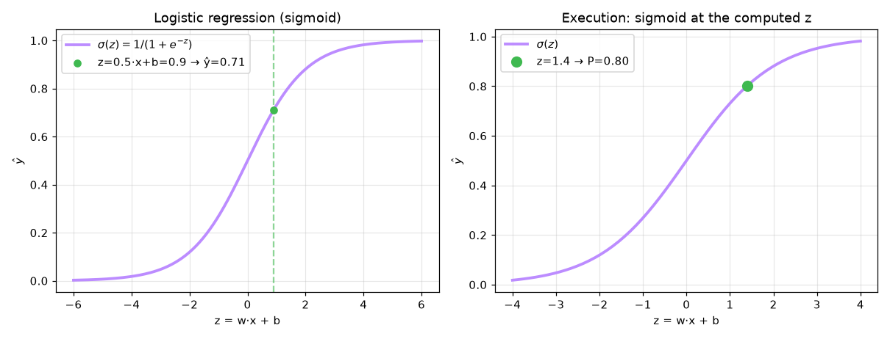

Logistic Regression — AI engineering example · part of the MLOps monorepo
This example is grounded in Logistic Regression. The equations below drive every forward and backward pass in the implementation.
Logistic regression models $P(y=1|x)$ via the sigmoid function. Binary cross-entropy loss penalizes confident wrong predictions. The gradient simplifies to $\hat{y} - y$, enabling efficient SGD.
Concrete forward-pass / update evaluation using the algorithm's own equations:
A step-by-step, intuitive explanation with concrete data so the formal equations above become clear:
Run this self-contained snippet in a Python shell to watch every step execute and print its value:
import numpy as np
x, w, b = 2.0, 1.2, -1.0 # one feature, trained weight & bias
z = w*x + b # linear combination (logit)
print("z =", z)
yh = 1/(1 + np.exp(-z)) # sigmoid squashes z into a (0,1) probability
print("P(spam) =", round(yh, 3))
print("BCE (y=1) =", round(-np.log(yh), 3)) # binary cross-entropy when true label is 1
Plots of the execution above — left: the concept; right: the step-by-step computation visualised. Sigmoid curve with decision boundary overlay; ROC and precision-recall curves.
The example follows a consistent data → train → evaluate → serve pipeline. Inputs are loaded and validated, transformed by the core algorithm, scored against held-out data, and exposed through a REST API.
| Class | Public methods | Responsibility |
|---|---|---|
PredictRequest | — | Request with explicit feature values. |
EmailRequest | — | Request with raw email text (features are auto-extracted). |
PredictResponse | — | Response with prediction and probability. |
DriftResponse | — | Drift detection response. |
LogisticRegression | _sigmoid, predict_proba, predict, fit, accuracy, precision, recall, f1_score, roc_auc, evaluate, save, load | Logistic regression for binary classification (spam / not spam). Model: z = X·w + b, p = sigmoid(z), prediction = 1 if p >= threshold else 0 |
data.py reads the source dataset and splits train/test.model.py applies the mathematics from Section 1.api.py exposes prediction endpoints with drift detection.Key design choices in this module: a pure-NumPy implementation (no PyTorch/TensorFlow), schema validation via ai_core.validation, structured JSON logging through ai_core.logging, Prometheus metrics from ai_core.metrics, and MLflow/model-registry persistence via ai_core.model_registry. The FastAPI service wraps the trained model with observability middleware from ai_core.fastapi_middleware.
The most important behaviour is summarised below; full source for each module is collapsible so the page stays readable while remaining self-contained.
LogisticRegression.predict(X, threshold)Return 1 (spam) if probability >= threshold, else 0 (not spam).
LogisticRegression.fit(X, y)Train using gradient descent on Binary Cross-Entropy.
LogisticRegression.evaluate(X, y)Compute all evaluation metrics.
"""Logistic Regression model for spam email classification."""
from dataclasses import dataclass, field
import numpy as np
@dataclass
class LogisticRegression:
"""Logistic regression for binary classification (spam / not spam).
Model: z = X·w + b, p = sigmoid(z), prediction = 1 if p >= threshold else 0
"""
learning_rate: float = 0.1
n_iterations: int = 2000
weights: np.ndarray | None = None
bias: float = 0.0
loss_history: list[float] = field(default_factory=list)
def _sigmoid(self, z: np.ndarray) -> np.ndarray:
"""Sigmoid activation function with numerical stability."""
z = np.clip(z, -500, 500)
return 1 / (1 + np.exp(-z))
def predict_proba(self, X: np.ndarray) -> np.ndarray:
"""Return probability of spam for each email."""
if self.weights is None:
raise ValueError("Model not trained. Call fit() first.")
z = np.dot(X, self.weights) + self.bias
return self._sigmoid(z)
def predict(self, X: np.ndarray, threshold: float = 0.5) -> np.ndarray:
"""Return 1 (spam) if probability >= threshold, else 0 (not spam)."""
return (self.predict_proba(X) >= threshold).astype(int)
def fit(self, X: np.ndarray, y: np.ndarray) -> "LogisticRegression":
"""Train using gradient descent on Binary Cross-Entropy."""
n_samples, n_features = X.shape
self.weights = np.zeros(n_features)
self.bias = 0.0
for _ in range(self.n_iterations):
probs = self.predict_proba(X)
loss = -np.mean(y * np.log(probs + 1e-9) + (1 - y) * np.log(1 - probs + 1e-9))
self.loss_history.append(float(loss))
dw = (1 / n_samples) * np.dot(X.T, (probs - y))
db = (1 / n_samples) * np.sum(probs - y)
self.weights -= self.learning_rate * dw
self.bias -= self.learning_rate * db
return self
def accuracy(self, X: np.ndarray, y: np.ndarray) -> float:
"""Compute classification accuracy."""
predictions = self.predict(X)
return float(np.mean(predictions == y))
def precision(self, X: np.ndarray, y: np.ndarray) -> float:
"""Compute precision (positive predictive value)."""
predictions = self.predict(X)
tp = np.sum((predictions == 1) & (y == 1))
fp = np.sum((predictions == 1) & (y == 0))
if tp + fp == 0:
return 0.0
return float(tp / (tp + fp))
def recall(self, X: np.ndarray, y: np.ndarray) -> float:
"""Compute recall (sensitivity)."""
predictions = self.predict(X)
tp = np.sum((predictions == 1) & (y == 1))
fn = np.sum((predictions == 0) & (y == 1))
if tp + fn == 0:
return 0.0
return float(tp / (tp + fn))
def f1_score(self, X: np.ndarray, y: np.ndarray) -> float:
"""Compute F1 score."""
p = self.precision(X, y)
r = self.recall(X, y)
if p + r == 0:
return 0.0
return float(2 * p * r / (p + r))
def roc_auc(self, X: np.ndarray, y: np.ndarray) -> float:
"""Compute ROC AUC approximation."""
probs = self.predict_proba(X)
n_pos = np.sum(y == 1)
n_neg = np.sum(y == 0)
if n_pos == 0 or n_neg == 0:
return 0.5
rankings = np.argsort(-probs)
sorted_y = y[rankings]
rank_sum = np.sum(np.where(sorted_y == 1)[0] + 1)
auc = (rank_sum - n_pos * (n_pos + 1) / 2) / (n_pos * n_neg)
return float(auc)
def evaluate(self, X: np.ndarray, y: np.ndarray) -> dict[str, float]:
"""Compute all evaluation metrics."""
return {
"accuracy": self.accuracy(X, y),
"precision": self.precision(X, y),
"recall": self.recall(X, y),
"f1": self.f1_score(X, y),
"roc_auc": self.roc_auc(X, y),
}
def save(self, path: str) -> None:
"""Save model parameters to disk."""
if self.weights is None:
raise ValueError("Cannot save untrained model")
np.savez(
path,
weights=self.weights,
bias=self.bias,
learning_rate=self.learning_rate,
n_iterations=self.n_iterations,
loss_history=np.array(self.loss_history),
)
@classmethod
def load(cls, path: str) -> "LogisticRegression":
"""Load model parameters from disk."""
data = np.load(path)
model = cls(
learning_rate=float(data["learning_rate"]),
n_iterations=int(data["n_iterations"]),
)
model.weights = data["weights"]
model.bias = float(data["bias"])
model.loss_history = list(data["loss_history"])
return model"""Production training pipeline for spam email classification."""
import argparse
import os
from pathlib import Path
import numpy as np
from ai_core.logging import get_logger, setup_logging
from ai_core.model_registry import ModelRegistry
from ai_core.validation import DataValidator, create_spam_schema
from spam_classification.data import (
FEATURE_NAMES,
load_training_data,
save_training_data,
train_test_split,
)
from spam_classification.model import LogisticRegression
logger = get_logger(__name__)
def train(
model_dir: Path,
data_path: Path,
learning_rate: float,
n_iterations: int,
model_version: str,
register_to_mlflow: bool = False,
test_size: float = 0.2,
random_seed: int = 42,
) -> dict:
"""Train the spam classification model and save artifacts.
Returns:
Dictionary with training metrics
"""
# Load training data
X, y = load_training_data(data_path)
logger.info("Loaded training data", n_samples=len(X), n_features=X.shape[1])
# Validate training data
validator = DataValidator(create_spam_schema())
validation = validator.validate(X, y)
if not validation.valid:
logger.error("Training data validation failed", errors=validation.errors)
raise ValueError(f"Training data validation failed: {validation.errors}")
logger.info("Training data validated", stats=validation.stats)
# Save training data for reproducibility
save_training_data(X, y, model_dir / "training_data.csv")
# Split train/test
X_train, X_test, y_train, y_test = train_test_split(
X, y, test_size=test_size, random_seed=random_seed
)
logger.info(
"Data split",
n_train=len(X_train),
n_test=len(X_test),
test_size=test_size,
random_seed=random_seed,
)
# Train model
model = LogisticRegression(learning_rate=learning_rate, n_iterations=n_iterations)
model.fit(X_train, y_train)
# Evaluate on train and test
train_metrics = model.evaluate(X_train, y_train)
test_metrics = model.evaluate(X_test, y_test)
logger.info(
"Training complete",
weights=model.weights.tolist() if model.weights is not None else None,
bias=model.bias,
train_metrics=train_metrics,
test_metrics=test_metrics,
iterations=n_iterations,
)
# Model validation - check metrics meet thresholds
if test_metrics["accuracy"] < 0.8:
logger.warning(
"Model accuracy below threshold", accuracy=test_metrics["accuracy"], threshold=0.8
)
# Save model
model_path = model_dir / f"spam_model_v{model_version}.npz"
model.save(str(model_path))
# Save training chart
_save_chart(model, X, y, model_dir, model_version)
# Compute metrics
metrics = {
"accuracy": test_metrics["accuracy"],
"precision": test_metrics["precision"],
"recall": test_metrics["recall"],
"f1": test_metrics["f1"],
"roc_auc": test_metrics["roc_auc"],
"train_accuracy": train_metrics["accuracy"],
"n_samples": len(X),
"n_train": len(X_train),
"n_test": len(X_test),
"n_features": X.shape[1],
}
# Register model
registry = ModelRegistry(base_dir=model_dir)
registry.save_model(
model_name="spam-classification",
model_version=model_version,
model_type="classification",
metrics=metrics,
parameters={
"learning_rate": learning_rate,
"n_iterations": n_iterations,
"random_seed": random_seed,
},
artifacts={
f"spam_model_v{model_version}.npz": model_path,
"training_data.csv": model_dir / "training_data.csv",
},
tags={"framework": "numpy", "task": "classification"},
)
if register_to_mlflow:
registry.log_to_mlflow(
model_name="spam-classification",
model_version=model_version,
metrics=metrics,
params={
"learning_rate": learning_rate,
"n_iterations": n_iterations,
"random_seed": random_seed,
},
artifacts={
"model": str(model_path),
"chart": str(model_dir / f"spam_classification_v{model_version}.png"),
"training_data": str(model_dir / "training_data.csv"),
},
tags={"model_type": "classification", "framework": "numpy"},
)
logger.info(
"Registered model to MLflow", model="spam-classification", version=model_version
)
return metrics
def _save_chart(
model: LogisticRegression, X: np.ndarray, y: np.ndarray, output_dir: Path, version: str
) -> None:
"""Save the classification chart."""
import matplotlib
matplotlib.use("Agg")
import matplotlib.pyplot as plt
if model.weights is None:
return
plt.figure(figsize=(10, 6))
# Plot feature weights
feature_names = FEATURE_NAMES
weights = model.weights
colors = ["green" if w > 0 else "red" for w in weights]
plt.bar(feature_names, weights, color=colors)
plt.axhline(y=0, color="black", linewidth=0.5)
plt.xlabel("Features")
plt.ylabel("Weight")
plt.title(f"Spam Classification Feature Weights - v{version}")
plt.xticks(rotation=45)
plt.grid(True, alpha=0.3)
chart_path = output_dir / f"spam_classification_v{version}.png"
plt.tight_layout()
plt.savefig(str(chart_path), dpi=100)
plt.close()
logger.info("Chart saved", path=str(chart_path))
def main():
parser = argparse.ArgumentParser(description="Train spam classification model")
parser.add_argument("--model-dir", type=Path, default=Path(os.getenv("MODEL_DIR", "/models")))
parser.add_argument("--data-path", type=Path, default=None)
parser.add_argument(
"--learning-rate", type=float, default=float(os.getenv("LEARNING_RATE", "0.1"))
)
parser.add_argument("--n-iterations", type=int, default=int(os.getenv("N_ITERATIONS", "2000")))
parser.add_argument("--model-version", type=str, default=os.getenv("MODEL_VERSION", "1.0.0"))
parser.add_argument("--test-size", type=float, default=float(os.getenv("TEST_SIZE", "0.2")))
parser.add_argument("--random-seed", type=int, default=int(os.getenv("RANDOM_SEED", "42")))
parser.add_argument(
"--register-mlflow",
action="store_true",
default=os.getenv("REGISTER_MLFLOW", "false").lower() == "true",
)
parser.add_argument("--log-level", type=str, default=os.getenv("LOG_LEVEL", "INFO"))
args = parser.parse_args()
setup_logging(args.log_level)
args.model_dir.mkdir(parents=True, exist_ok=True)
metrics = train(
model_dir=args.model_dir,
data_path=args.data_path,
learning_rate=args.learning_rate,
n_iterations=args.n_iterations,
model_version=args.model_version,
register_to_mlflow=args.register_mlflow,
test_size=args.test_size,
random_seed=args.random_seed,
)
logger.info("Training finished", metrics=metrics, model_dir=str(args.model_dir))
if __name__ == "__main__":
main()"""Data loading and preprocessing for spam email classification."""
from pathlib import Path
import numpy as np
import pandas as pd
# Feature order MUST match what was used during training
FEATURE_NAMES = ["free", "win", "link", "!!!", "meeting"]
def load_training_data(data_path: Path | None = None) -> tuple[np.ndarray, np.ndarray]:
"""Load spam training data from CSV or use built-in dataset.
Expected CSV format:
free,win,link,!!!,meeting,label
1,1,1,1,0,1
...
"""
if data_path and Path(data_path).exists():
df = pd.read_csv(data_path)
X = df[FEATURE_NAMES].values.astype(float)
y = df["label"].values.astype(int)
return X, y
# Built-in training data
emails = np.array(
[
[1, 1, 1, 1, 0], # SPAM
[0, 0, 0, 0, 1], # NOT
[1, 0, 1, 0, 0], # SPAM
[0, 0, 0, 0, 1], # NOT
[0, 1, 1, 1, 0], # SPAM
[0, 0, 0, 0, 1], # NOT
[1, 1, 1, 1, 0], # SPAM
[0, 0, 0, 0, 1], # NOT
[0, 1, 1, 0, 0], # SPAM
[0, 0, 0, 0, 1], # NOT
],
dtype=float,
)
labels = np.array([1, 0, 1, 0, 1, 0, 1, 0, 1, 0], dtype=int)
return emails, labels
def train_test_split(
X: np.ndarray, y: np.ndarray, test_size: float = 0.2, random_seed: int | None = None
) -> tuple[np.ndarray, np.ndarray, np.ndarray, np.ndarray]:
"""Split data into train and test sets."""
n = len(X)
n_test = max(1, int(n * test_size))
if random_seed is not None:
rng = np.random.default_rng(random_seed)
indices = rng.permutation(n)
else:
indices = np.random.permutation(n)
test_idx = indices[:n_test]
train_idx = indices[n_test:]
return X[train_idx], X[test_idx], y[train_idx], y[test_idx]
def save_training_data(X: np.ndarray, y: np.ndarray, path: Path) -> None:
"""Save training data to CSV for reproducibility."""
path = Path(path)
path.parent.mkdir(parents=True, exist_ok=True)
df = pd.DataFrame(X, columns=FEATURE_NAMES)
df["label"] = y
df.to_csv(path, index=False)"""Production serving API for spam email classification."""
import os
import re
import time
from contextlib import asynccontextmanager
from pathlib import Path
import numpy as np
from ai_core.drift import DriftDetector
from ai_core.fastapi_middleware import add_observability_middleware
from ai_core.logging import get_logger, setup_logging
from ai_core.metrics import MetricsCollector
from ai_core.model_registry import ModelRegistry
from ai_core.validation import DataValidator, create_spam_schema
from fastapi import FastAPI, HTTPException
from pydantic import BaseModel, Field
from spam_classification.data import FEATURE_NAMES
from spam_classification.model import LogisticRegression
logger = get_logger(__name__)
# Configuration
MODEL_DIR = Path(os.getenv("MODEL_DIR", "/models"))
MODEL_VERSION = os.getenv("MODEL_VERSION", "latest")
SPAM_THRESHOLD = float(os.getenv("SPAM_THRESHOLD", "0.5"))
METRICS_PORT = int(os.getenv("METRICS_PORT", os.getenv("SPAM_METRICS_PORT", "8002")))
DRIFT_THRESHOLD = float(os.getenv("DRIFT_THRESHOLD", "0.2"))
class PredictRequest(BaseModel):
"""Request with explicit feature values."""
features: list[int] = Field(
..., min_length=5, max_length=5, description="[free, win, link, !!!, meeting]"
)
threshold: float | None = SPAM_THRESHOLD
class EmailRequest(BaseModel):
"""Request with raw email text (features are auto-extracted)."""
text: str = Field(..., min_length=1, max_length=10000)
threshold: float | None = SPAM_THRESHOLD
class PredictResponse(BaseModel):
"""Response with prediction and probability."""
is_spam: bool
spam_probability: float
threshold: float
features: list[int]
feature_names: list[str]
label: str
model_version: str
class DriftResponse(BaseModel):
"""Drift detection response."""
total_features: int
drifted_features: int
drift_ratio: float
drifted: list[dict]
all_results: list[dict]
# Global model state
_model: LogisticRegression | None = None
_model_version: str = "unknown"
_metrics: MetricsCollector | None = None
_validator: DataValidator | None = None
_drift_detector: DriftDetector | None = None
_reference_data: np.ndarray | None = None
_recent_predictions: list[list[int]] = []
@asynccontextmanager
async def lifespan(app: FastAPI):
"""Load model at startup and clean up at shutdown."""
global _model, _model_version, _metrics, _validator, _drift_detector, _reference_data
setup_logging(os.getenv("LOG_LEVEL", "INFO"))
_metrics = MetricsCollector("spam_classification", port=METRICS_PORT)
app.state.metrics = _metrics
_validator = DataValidator(create_spam_schema())
_drift_detector = DriftDetector(
feature_names=FEATURE_NAMES,
feature_types={f: "binary" for f in FEATURE_NAMES},
psi_threshold=DRIFT_THRESHOLD,
)
_model, _model_version = _load_model()
_metrics.set_model_version(_model_version)
_metrics.set_model_info(
model_name="spam-classification", model_version=_model_version, model_type="classification"
)
# Load reference data for drift detection
_reference_data = _load_reference_data()
logger.info("Model loaded", model="spam-classification", version=_model_version)
yield
logger.info("Shutting down spam-classification API")
def _load_model() -> tuple[LogisticRegression, str]:
"""Load the latest model from the registry or model directory with resilient fallback."""
# 1. Try model registry
registry = ModelRegistry(base_dir=MODEL_DIR)
try:
if MODEL_VERSION == "latest":
models = registry.list_models()
spam_models = [m for m in models if m.get("model_name") == "spam-classification"]
if spam_models:
spam_models.sort(key=lambda m: m["model_version"], reverse=True)
latest = spam_models[0]
model_dir = Path(latest["artifact_path"])
npz_files = list(model_dir.glob("spam_model_*.npz")) + list(model_dir.glob("*.npz"))
if npz_files:
return LogisticRegression.load(str(npz_files[0])), latest["model_version"]
else:
model_dir = MODEL_DIR / "spam-classification" / MODEL_VERSION
if model_dir.exists():
npz_files = list(model_dir.glob("spam_model_*.npz")) + list(model_dir.glob("*.npz"))
if npz_files:
return LogisticRegression.load(str(npz_files[0])), MODEL_VERSION
except Exception as e:
logger.warning(f"Registry lookup failed: {e}")
# 2. Try direct model in MODEL_DIR
npz_path = MODEL_DIR / "spam_model.npz"
if npz_path.exists():
return LogisticRegression.load(str(npz_path)), "legacy"
# 3. Try bundled artifacts directory
candidate_paths = [
Path("/app/artifacts/models/spam_model_v1.0.0.npz"),
Path(__file__).resolve().parents[3] / "artifacts" / "models" / "spam_model_v1.0.0.npz",
]
for p in candidate_paths:
if p.exists():
logger.info("Loading bundled baseline model", path=str(p))
return LogisticRegression.load(str(p)), "1.0.0-bundled"
# 4. In-memory baseline fallback (never crash cold start)
logger.warning(
"No pre-existing model found on disk. Initializing baseline spam classification model."
)
from spam_classification.data import load_training_data
X_base, y_base = load_training_data(None)
model = LogisticRegression(learning_rate=0.1, n_iterations=2000)
model.fit(X_base, y_base)
return model, "1.0.0-baseline"
def _load_reference_data() -> np.ndarray | None:
"""Load reference training data for drift detection."""
candidate_csvs = [
MODEL_DIR / "spam-classification" / _model_version / "training_data.csv",
MODEL_DIR / "training_data.csv",
Path("/app/artifacts/models/training_data.csv"),
Path(__file__).resolve().parents[3] / "artifacts" / "models" / "training_data.csv",
]
for csv_path in candidate_csvs:
if csv_path.exists():
try:
import pandas as pd
df = pd.read_csv(csv_path)
if all(f in df.columns for f in FEATURE_NAMES):
return df[FEATURE_NAMES].values
except Exception as e:
logger.warning("Could not read reference csv", path=str(csv_path), error=str(e))
from spam_classification.data import load_training_data
X_base, _ = load_training_data(None)
return X_base
def extract_features(text: str) -> list[int]:
"""Extract 5 binary features from raw email text."""
text_lower = text.lower()
return [
1 if "free" in text_lower else 0,
1 if re.search(r"\bwin\b", text_lower) else 0,
1 if re.search(r"https?://|www\.", text_lower) else 0,
1 if text.count("!") >= 3 else 0,
1 if "meeting" in text_lower else 0,
]
# Create FastAPI app
app = FastAPI(
title="Spam Email Detection API",
description="Logistic Regression model for classifying emails as SPAM or NOT spam",
version="1.0.0",
lifespan=lifespan,
)
# Add observability middleware
add_observability_middleware(app)
@app.get("/")
def read_root():
"""Service information."""
return {
"service": "spam-classification-api",
"version": "1.0.0",
"model_version": _model_version,
"threshold": SPAM_THRESHOLD,
"features": FEATURE_NAMES,
"endpoints": {
"health": "/health",
"predict": "POST /predict",
"predict_email": "POST /predict/email",
"drift": "GET /drift",
"metrics": "/metrics",
},
}
@app.get("/health")
def health_check():
"""Kubernetes liveness/readiness probe."""
if _model is None:
raise HTTPException(status_code=503, detail="Model not loaded")
return {
"status": "healthy",
"model_loaded": True,
"model_version": _model_version,
}
@app.get("/metrics")
def metrics():
"""Prometheus metrics endpoint."""
from fastapi import Response
from prometheus_client import CONTENT_TYPE_LATEST, generate_latest
return Response(content=generate_latest(), media_type=CONTENT_TYPE_LATEST)
@app.post("/reload")
def reload_model():
"""Dynamically reload the model from disk/registry."""
global _model, _model_version, _reference_data
try:
_model, _model_version = _load_model()
if _metrics:
_metrics.set_model_version(_model_version)
_metrics.set_model_info(
model_name="spam-classification",
model_version=_model_version,
model_type="classification",
)
_reference_data = _load_reference_data()
logger.info(
"Model reloaded dynamically", model="spam-classification", version=_model_version
)
return {"status": "reloaded", "model_version": _model_version}
except Exception as e:
logger.exception("Model reload failed", error=str(e))
raise HTTPException(status_code=500, detail=f"Reload failed: {e}") from e
@app.get("/drift", response_model=DriftResponse)
def drift_check():
"""Check for data drift between reference and recent predictions."""
if _drift_detector is None or _reference_data is None:
raise HTTPException(status_code=503, detail="Drift detection not available")
if len(_recent_predictions) < 10:
return DriftResponse(
total_features=len(FEATURE_NAMES),
drifted_features=0,
drift_ratio=0.0,
drifted=[],
all_results=[],
)
current = np.array(_recent_predictions[-100:])
results = _drift_detector.detect_drift(_reference_data, current)
summary = _drift_detector.summarize(results)
if _metrics:
_metrics.set_drift_ratio(summary["drift_ratio"])
return DriftResponse(**summary)
def _compute_prediction(features_list: list[int], threshold: float) -> PredictResponse:
"""Core prediction logic shared by all predict endpoints."""
if _model is None or _metrics is None or _validator is None:
raise HTTPException(status_code=503, detail="Model not loaded")
if len(features_list) != len(FEATURE_NAMES):
raise HTTPException(
status_code=400,
detail=f"Expected {len(FEATURE_NAMES)} features, got {len(features_list)}",
)
# Validate input
validation = _validator.validate(np.array([features_list]))
if not validation.valid:
raise HTTPException(status_code=422, detail=validation.errors)
start = time.time()
try:
X = np.array(features_list, dtype=float).reshape(1, -1)
prob = float(_model.predict_proba(X)[0])
is_spam = prob >= threshold
duration = time.time() - start
_metrics.record_prediction(model_version=_model_version, duration=duration)
# Track for drift detection
_recent_predictions.append(features_list)
if len(_recent_predictions) > 1000:
_recent_predictions.pop(0)
return PredictResponse(
is_spam=is_spam,
spam_probability=round(prob, 4),
threshold=threshold,
features=[int(f) for f in features_list],
feature_names=FEATURE_NAMES,
label="SPAM" if is_spam else "NOT spam",
model_version=_model_version,
)
except Exception as e:
_metrics.record_error(model_version=_model_version, error_type="prediction")
logger.exception("Prediction failed", error=str(e))
raise HTTPException(status_code=500, detail="Prediction failed") from e
@app.post("/predict", response_model=PredictResponse)
def predict_features(body: PredictRequest):
"""Classify an email given explicit feature values."""
return _compute_prediction(body.features, body.threshold)
@app.post("/predict/email", response_model=PredictResponse)
def predict_email(body: EmailRequest):
"""Classify an email given raw text. Features are auto-extracted."""
features = extract_features(body.text)
return _compute_prediction(features, body.threshold)This example is a first-class consumer of the shared packages/ai-core library.
It reuses the following foundation modules instead of re-implementing infrastructure:
ai_core.config.Because every example shares ai_core, cross-cutting concerns (drift detection,
logging, metrics, model registry) behave identically across the 47 examples in this monorepo.